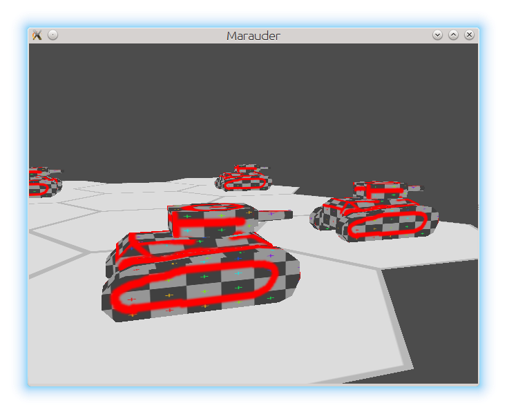

Пт 28 Февраль 2014
Тому, что есть на данный момент до игры еще очень далеко. Пока что, по шкале от "демо OpenGL приложение с вращающимся полигоном" до "X-COM, HoMM, Кодекс Войны и др. большие пошаговые игры, которые пришли сходу мне в голову" Мародер находится на минимальном отдалении от левого края.
На проект я потратил полтора месяца по часу-другому в день. Большую часть времени я изучал и игрался с Ржавчиной (которая язык программирования) и изучивал-вспоминал основы OpenGL.
Есть стремная тестовая модель (вроде как танка), слепленная в блендере за пару минут и покрашенная там же, что бы проверить, как натягиваются текстуры:

Других видов отрядов нет.
Текстурки - png. Модельки - .obj (самый простой формат, что я знаю).
Есть карта из одинаковых шестиугольников серого цвета. В каждой клетке может находиться один отряд.
Работает простенькое выделение мышкой (color picking).
По кнопке U (_u_nit) в клетке, на которую указывает мышка, появляется новый отряд. Появляется при помощи простенькой анимации - поднимается из-под земли. Такие вот зомби-танки.
Отряды можно выделять кликом по клетке, но визуально это никак не отображается.
Выделенному отряду можно отдать приказ двигаться, кликнув по пустой клетке, но путенахождение не реализовано, так что он просто полетит по прямой к нужной клетке.
Выделенному отряду можно дать команду атаковать, наведя мышку на другой отряд и нажав клавишу A (_a_ttack). Очков здоровия, брони, точности и т.д. нет, атакованный отряд просто сразу умирает. Анимация смерти является противоположностью анимации появления - отряд уходит под землю. Очков действий у отрядов нет, атаковать они могут любое количество раз.
По нажатию кнопки T (end _t_urn) ход переходит к следующему игроку (хот сит) и ему показываются результаты действий противников. Отряды не принадлежат к какому-либо игроку и каждый игрок может отдавать приказы любому отряду.
Строчек кода на все ушло ~3800.
Собирается под линуксом на ночной сборке компилятора Ржавчины. Настроена автосборка на travis-ci.org и я стараюсь не давать коду отстать от ночной сборки компилятора больше, чем на день.
Исходники хранятся на гитхабе https://github.com/ozkriff/marauder, для текстур и моделей отдельный репозиторий - https://github.com/ozkriff/marauder-data.
Вооооот, так что делать мне еще очень и очень и очень много. :)
blog comments powered by Disqus